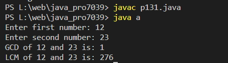

Write a Java method to find GCD and LCM of Two Numbers
Code:-
import java.util.Scanner;
class a
{
public static void main(String[] args) {
Scanner scanner = new Scanner(System.in);
System.out.print("Enter first number: ");
int num1 = scanner.nextInt();
System.out.print("Enter second number: ");
int num2 = scanner.nextInt();
int gcd = findGCD(num1, num2);
// Calculate LCM
int lcm = (num1 * num2) / gcd;
// Output GCD and LCM
System.out.println("GCD of " + num1 + " and " + num2 + " is: " + gcd);
System.out.println("LCM of " + num1 + " and " + num2 + " is: " + lcm);
}
// Function to find GCD using Euclidean algorithm
public static int findGCD(int a, int b) {
while (b != 0) {
int temp = b;
b = a % b;
a = temp;
}
return a;
}
}
Output:-
